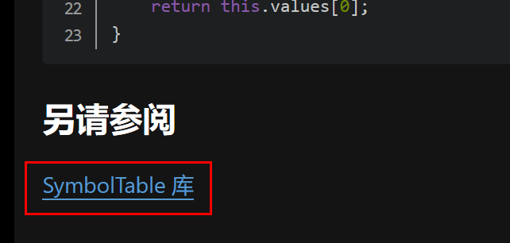
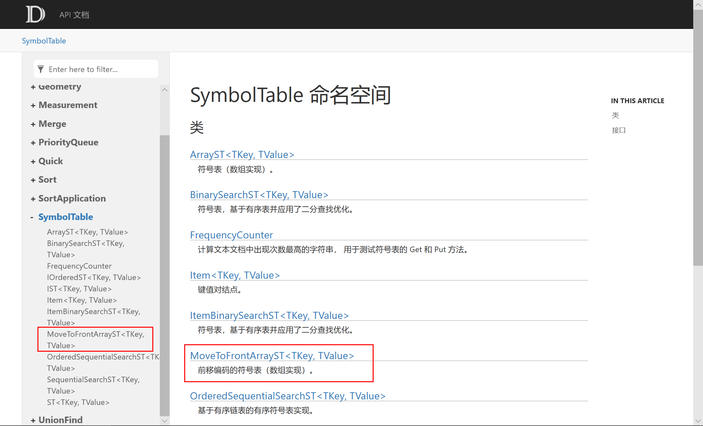
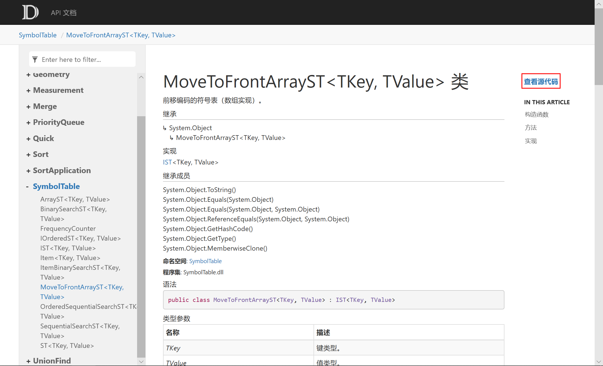
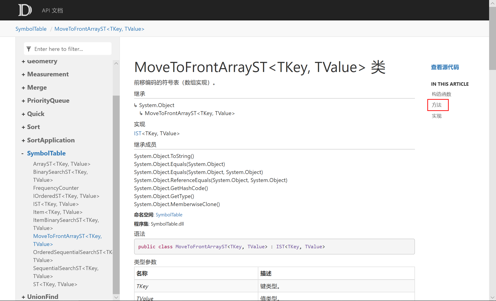
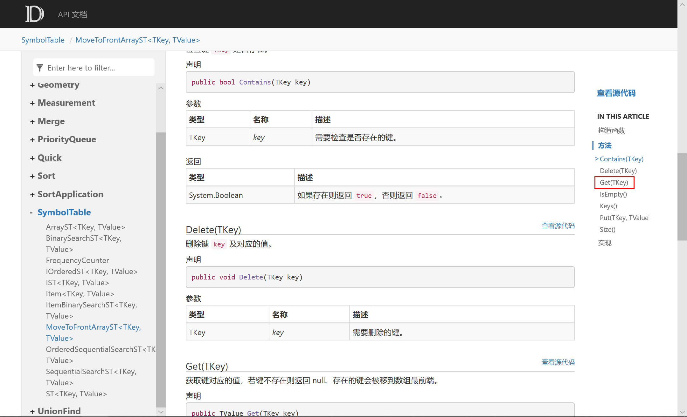
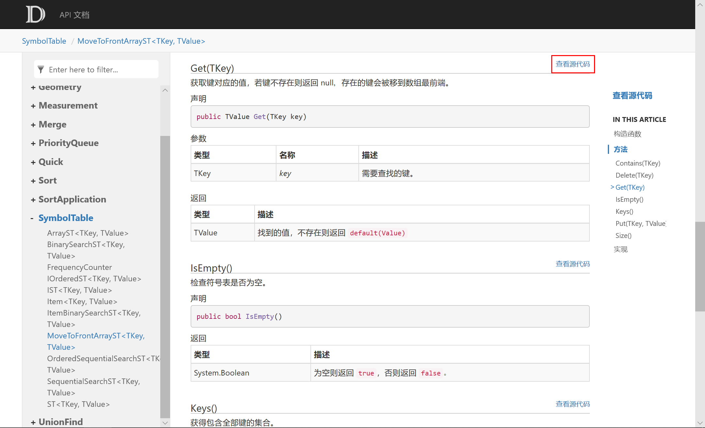
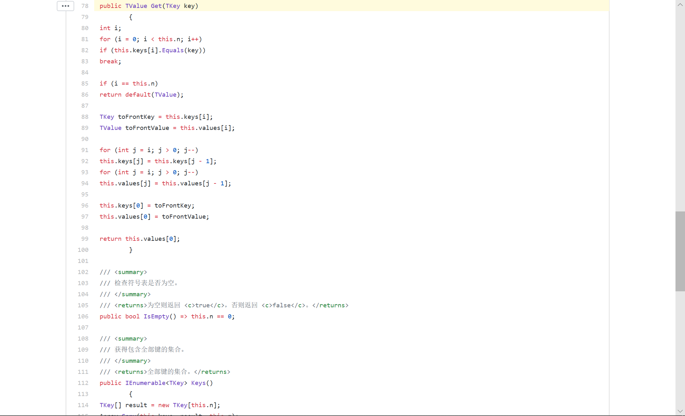

© 2019 《算法（第四版）》C# 题解 | Provided By 沈星繁
搜索解答
目前已完成到 2.5
如何：查找 API 说明
上次更新：2019-03-01
发现了题解错误/代码缺陷/排版问题？请点这里：如何：提交反馈 。
有时候题解中会使用到自定义的类，它们一般都位于章节对应的类库中，本文将介绍如何查阅 API 并获得源代码。
这里以 3.1.22 为例，题解见 3.1.22。
题目中用到了自定义的类 MoveToFrontArrayST，但在 GitHub 上对应题目的文件夹下是没有这个类的。
事实上这个类的源代码放在了章节对应的库文件中，本例指的是 3.1 对应的 SymbolTable 库。
找到题解最后的「另请参阅」部分，点击类库的超链接：

这会将我们带到该类库的 API 文档，找到类 MoveToFrontArrayST，点击下图任意一个链接：

随后我们会被导航到 MoveToFrontArrayST 类的说明，点击右侧的「查看源代码」即可到达相应的 GitHub 页面。

有时候一个类的方法数量会比较多，如果只需要查看某个方法的代码，请按照如下步骤操作。
点击右侧导航里面的「方法」（如果你需要查看接口则选择「实现」），展开导航菜单：

选择你想要查看的方法，这里以 Get() 为例，点击「Get(TKey)」：

网页会自动导航到 Get() 方法的说明，点击方法标题右侧的「查看源代码」：

接下来我们会被导航到对应的 GitHub 页面，同时自动滚动到 Get() 方法的定义处：
